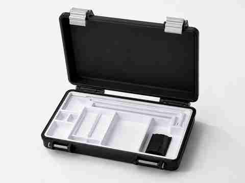

Já tenho um arquivo ou uma peça
Quero produzir
Produção de peças funcionais, reposições, organizadores, objetos decorativos e pequenas séries, com parâmetros definidos para a geometria e o uso.
Ideal para: pessoas, profissionais, oficinas, empresas e makers.
Produzir minha peça